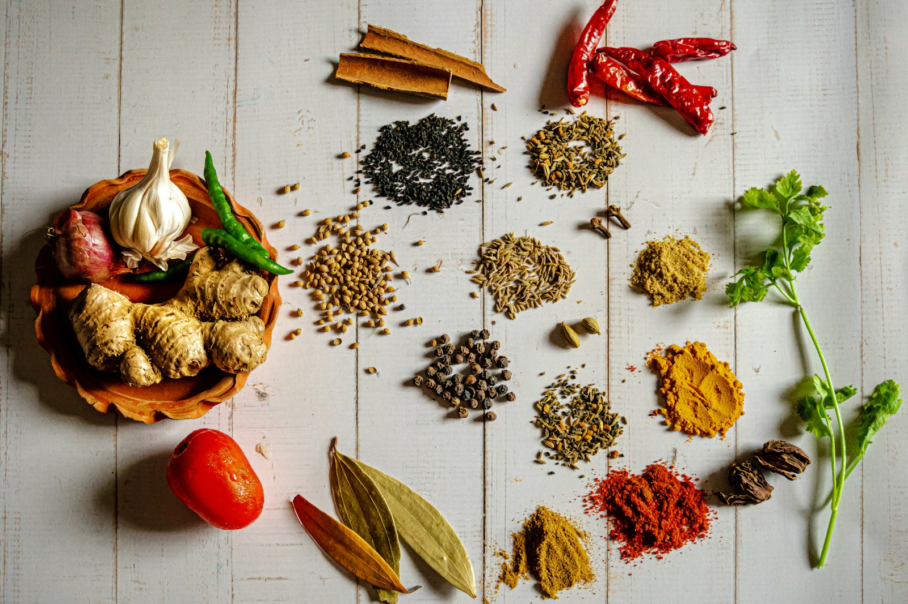

Базовые специи для домашней кухни

Достаточно небольшой полки, чтобы закрыть большинство домашних блюд. Соль и перец — база. Паприка даёт цвет шашлыку и зажарке. Лавровый лист нужен супам. Корица и ваниль закрывают выпечку.
Что купить в первую очередь
- Чёрный перец горошком
- Сладкая паприка
- Лавровый лист
- Сушёный чеснок
- Корица
К каким блюдам что класть
В борщ и куриный суп хватает лаврового листа и перца: их кладут в конце, чтобы аромат не выкипел. Для гуляша и шашлыка нужна паприка, она даёт цвет без лишней остроты. В шарлотку и наполеон идут корица или ваниль, но понемногу: специя не должна перебивать яблоко или крем.
Соль добавляйте в несколько заходов. Если посолить мясо только в конце тушения, оно останется пресным внутри, а соус — слишком солёным.
Как хранить
Не держите открытые банки у плиты: от жара аромат выветривается быстрее. Крышка должна закрываться плотно, а полка — быть сухой. Перец лучше молоть перед готовкой, горошек хранится дольше молотого.